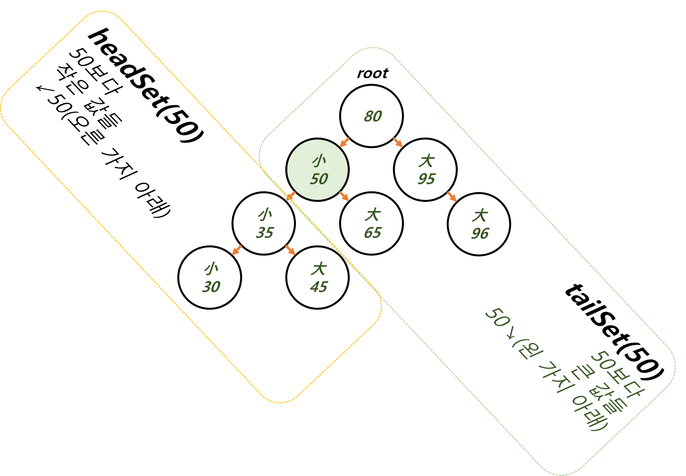
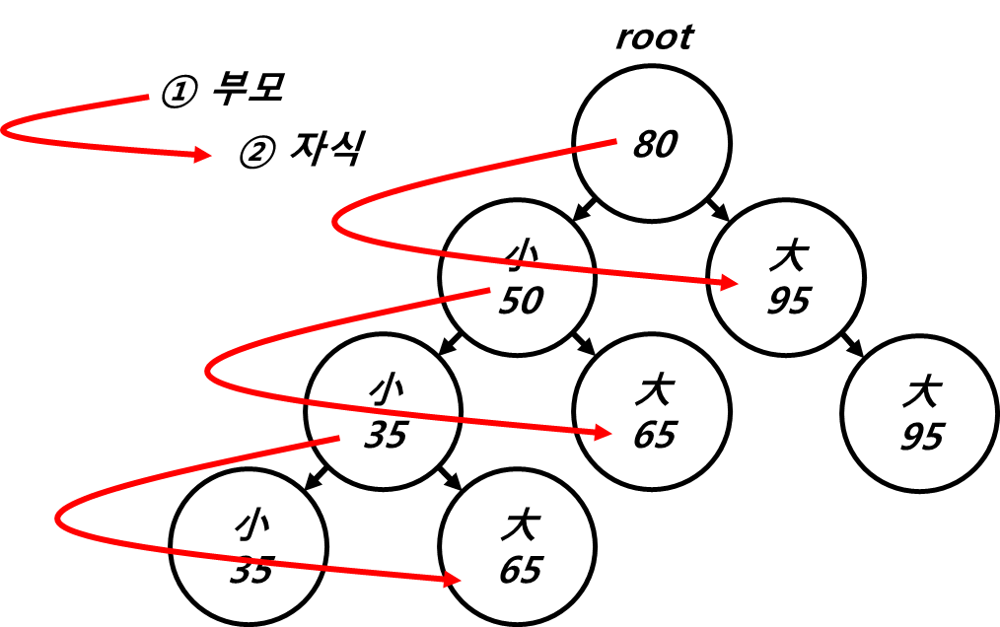
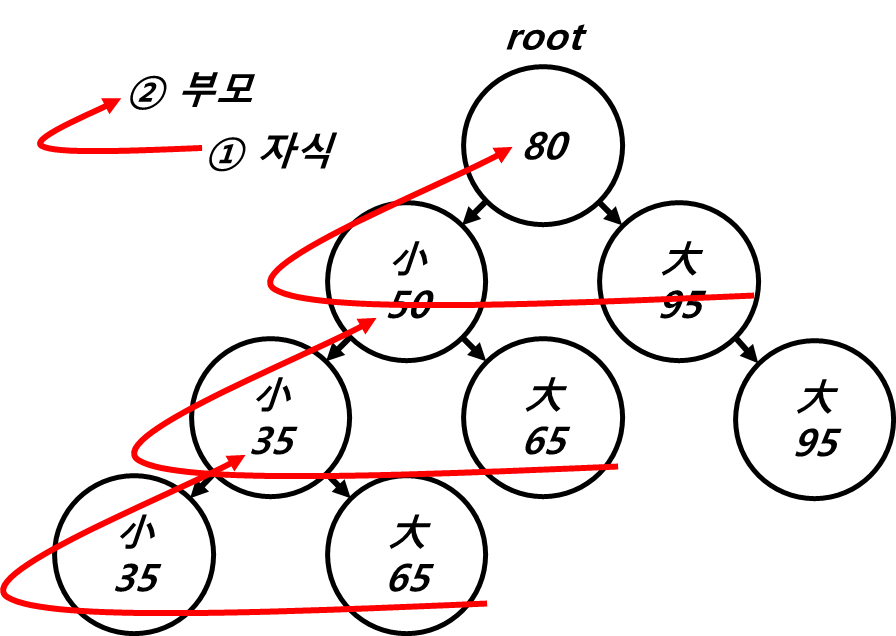
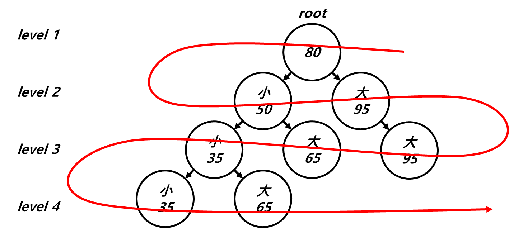
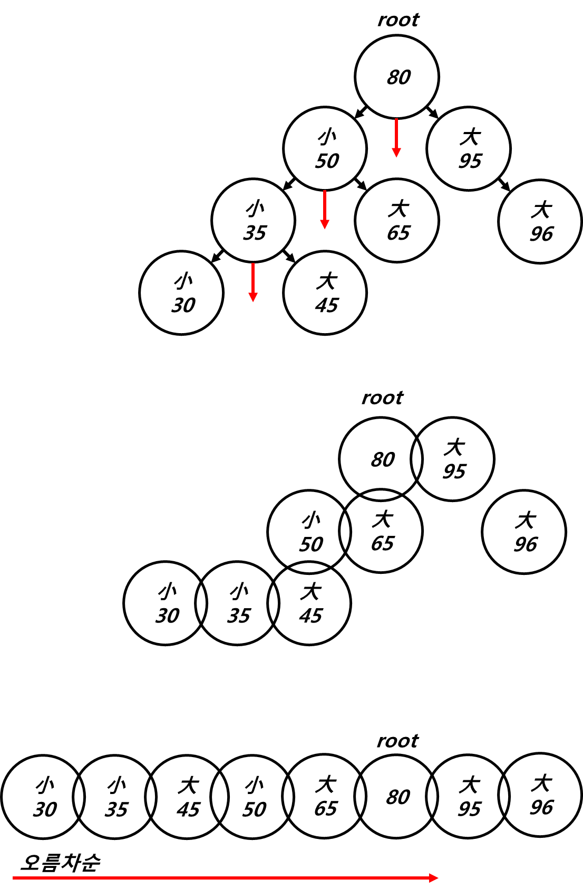

Ch11-42~45. TreeSet
0. 목차
Chapter11. 컬렉션 프레임웍
Ch11 - 42. TreeSet의 메서드
Ch11 - 43. TreeSet 예제1
Ch11 - 44. TreeSet 예제2
Ch11 - 45. TreeSet 예제3
Ch11 - 42. TreeSet의 메서드
▶ Collection과 중복 된 메서드는 여기서는 생략
▷ add(), size(), remove(), isEmpty(), iterator()…
▶ TreeSet()
▷ 기본 생성자
▷ 비교 기준 comparable(기본 비교 기준)
▷ add() → HashSet은 equals()와 hasCode() 호출
▷ add() → TreeSet은 지정하지 않으면 comparable
▶ TreeSet(Collection c)
▷ 주어진 컬렉션을 저장하는 TreeSet 생성
▶ TreeSet(Compare comp)
▷ 주어진 정렬 기준으로 정렬하는 TreeSet 생성
▶ Object first()
▷ 정렬 된 순서에서 첫 번째 객체 반환
▷ 오름 차순 일 때, 제일 小
▶ Object last()
▷ 정렬 된 순서에서 마지막 객체 반환
▷ 오름 차순 일 때, 제일 大
▶ Object celling(Object o)
▷ celling : 천장 부터
▷ 올림
Object celling(45)
30 40 50
45 = 40 < 45 > 50
celling = 올림
return 50
▷ 지정 된 객체와 같은 객체 반환
▷ 없으면 큰 값을 가진 객체 중, 제일 가까운 값의 객체를 반환
▷ 이것도 없으면 null
▶ Object floor(Object o)
▷ floor : 바닥 부터
▷ 버림
Object floor(45)
30 40 50
45 = 40 < 45 > 50
floor = 버림
return 40
▷ 지정 된 객체와 같은 객체 반환
▷ 없으면 작은 값을 가진 객체 중, 제일 가까운 값의 객체를 반환
▷ 이것도 없으면 null
▶ Object higher(Object o)
▷ higher : 나보다 큰 것 부터
Object higher(45)
30 40 50
45 = 40 < 45 > 50
higher = 나보다 큰 것
return 50
▷ 지정 된 객체보다 큰 값을 가진 객체 중, 제일 가까운 값의 객체를 반환
▷ 없으면 null
▶ Object lower(Object o)
▷ lower : 나보다 작은 것 부터
Object lower(45)
30 40 50
45 = 40 < 45 > 50
lower = 나보다 작은 것
return 40
▷ 지정 된 객체보다 작은 값을 가진 객체 중, 제일 가까운 값의 객체를 반환
▷ 없으면 null
▶ SortedSet subSet(Object fromElement, Object toElemnt)
▷ 범위 검색 : fromElement ≤ 범위 < toElemnt
SortedSet subSet(1, 5)
return 1, 2, 3, 4
▷ 범위의 결과를 반환
▶ SortedSet headSet(Object toElemnt)
▷ toElemnt보다 작은 거 < toElemnt
SortedSet headSet(5)
return 4, 3, 2, 1
▷ 지정 된 객체보다 작은 값의 객체들을 반환
▶ SortedSet Set(Object fromElemnt)
▷ fromElement < fromElement보다 큰 거
SortedSet Set(1)
return 2, 3, 4, 5
▷ 지정 된 객체보다 큰 값의 객체를 반환
Ch11 - 43. TreeSet 예제1
▶ TreeSet() vs HashSet()
▷ TreeSet() : 정렬O
▷ HashSet() : 정렬X
① Set set = new TreeSet();
② Set set = new HashSet();
for (int i = 0; set.size() < 6 ; i++) {
int num = (int)(Math.random()*45) + 1;
set.add(num); // set.add(new Integer(num));
}
① TreeSet() [4, 7, 13, 15, 22, 31]
② HashSet() [33, 37, 5, 6, 44, 45]
▶ for문에서 set.add(num) → set.add() 변경
▷ set.add(num) → set.add() = 에러
Set set = new TreeSet();
for (int i = 0; set.size() < 6 ; i++) {
int num = (int)(Math.random()*45) + 1;
set.add(); // ERROR
}
// console
ERROR
▷ 왜 에러가 날까? 비교 기준이 없어서
▷ set.add(num) = set.add(new Integer(num))
- Integer.class 中
... public final class Integer extends Number implements Comparable<Integer>, Constable, ConstantDesc ... - Integer는 Comparable을 구현하고 있음
- Comparable = 비교 기준
- 그래서
set.add(num) = set.add(new Integer(num))는 에러 안났음
▶ class를 하나 만들어서 비교 기준으로 넣기
▷ set.add() → set.add(new Com()) = 에러
class Com { } // 새로운 클래스
...
Set set = new TreeSet();
for (int i = 0; set.size() < 6 ; i++) {
int num = (int)(Math.random()*45) + 1;
set.add(new Com()); // ERROR
}
// console
ERROR
▷ 왜 뭘 넣어 주어도 에러가 날까? 비교 기준이 없어서
▷ class Com에 비교 기준이 있는 건 아니니까
▶ Comparable를 구현하는 Com class를 넣기
▷ set.add(new Com()) = 에러 안남
class Com implements Comparable {
@Override
public int compareTo(Object o) {
return 1; // default는 0인데 1로 바꿈
}
}
...
Set set = new TreeSet();
for (int i = 0; set.size() < 6 ; i++) {
int num = (int)(Math.random()*45) + 1;
set.add(new Com());
}
// console
[Com@6f75e721, Com@69222c14, Com@606d8acf, Com@782830e, Com@470e2030, Com@3fb4f649]
▶ Set set = new TreeSet() 여기에 직접 new Com() 넣기
▷ class Com이 comparable 구현
▷ Set set = new TreeSet(new Com()) = 에러 안남
class Com implements Comparator {
@Override
public int compare(Object o1, Object o2) {
return 1;
}
}
...
Set set = new TreeSet(new Com());
for (int i = 0; set.size() < 6; i++) {
int num = (int) (Math.random() * 45) + 1;
set.add(new Test());
}
// console
[Test@69222c14, Test@606d8acf, Test@782830e, Test@470e2030, Test@3fb4f649, Test@33833882]
Ch11 - 44. TreeSet 예제2
▶ subSet(from, to)
▷ from ≤ 범위 < to
import java.util.*;
class Ex11_14 {
public static void main(String[] args) {
TreeSet set = new TreeSet();
String from = "b";
String to = "d";
set.add("abc"); set.add("alien"); set.add("bat");
set.add("car"); set.add("Car"); set.add("disc");
set.add("dance"); set.add("dZZZZ"); set.add("dzzzz");
set.add("elephant"); set.add("elevator"); set.add("fan");
set.add("flower");
System.out.println(set);
System.out.println("range search : from " + from +" to "+ to);
System.out.println("result1 : " + set.subSet(from, to));
System.out.println("result2 : " + set.subSet(from, to + "zzz")); // 정렬 : A~Z - a~z
}
}
// console
[Car, abc, alien, bat, car, dZZZZ, dance, disc, dzzzz, elephant, elevator, fan, flower]
range search : from b to d
result1 : [bat, car] // d는 미포함
result2 : [bat, car, dZZZZ, dance, disc] // dA~Z ~ da~y까지만 z는 미포함
▷ d에서 z까지 출력
TreeSet set = new TreeSet();
String from = "d"; // from 변경
String to = "z"; // to 변경
set.add("abc"); set.add("alien"); set.add("bat");
set.add("car"); set.add("Car"); set.add("disc");
set.add("dance"); set.add("dZZZZ"); set.add("dzzzz");
set.add("elephant"); set.add("elevator"); set.add("fan");
set.add("flower");
System.out.println(set);
System.out.println("range search : from " + from +" to "+ to);
System.out.println("result1 : " + set.subSet(from, to));
// console
[Car, abc, alien, bat, car, dZZZZ, dance, disc, dzzzz, elephant, elevator, fan, flower]
range search : from d to z
result1 : [dZZZZ, dance, disc, dzzzz, elephant, elevator, fan, flower]
Ch11 - 45. TreeSet 예제3
▶ headSet(50)과 tailSet(50)
▷ headSet(50) : ←←←○↗→→→
▷ tailSet(50) : ←←←↙○→→→
import java.util.*;
class Ex11_15 {
public static void main(String[] args) {
TreeSet set = new TreeSet();
int[] score = {80, 95, 50, 35, 45, 65, 10, 100};
for(int i=0; i < score.length; i++)
set.add(new Integer(score[i]));
System.out.println("50보다 작은 값 : " + set.headSet(new Integer(50)));
System.out.println("50보다 큰 값 : " + set.tailSet(new Integer(50)));
}
}
// console
50보다 작은 값 : [10, 35, 45]
50보다 큰 값 : [50, 65, 80, 95, 100]

▶ 트리 순회(tree traversal)
▷ 이진 트리의 모든 노드를 한 번씩 읽는 것
▷ 전위 순회(pre order) : 부모 → 자식

▷ 후위 순회(post order) : 자식 → 부모

▷ 레벨 순회(level order)

▷ 中위 순회(in order)
